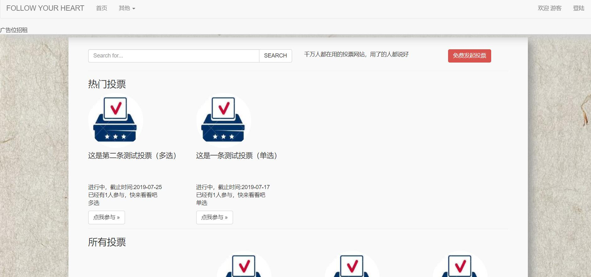
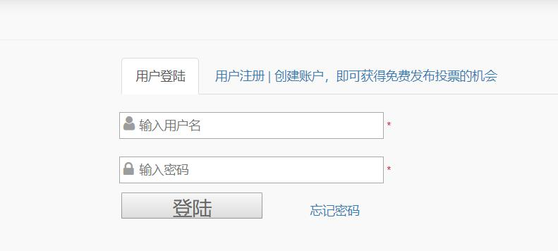
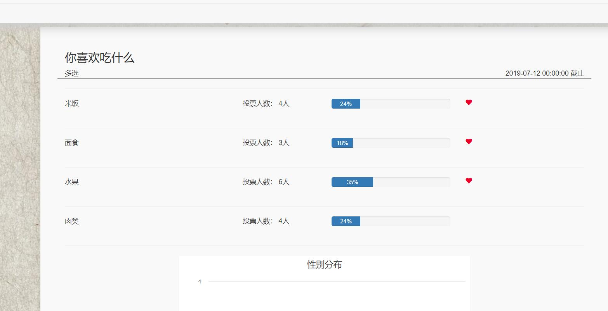
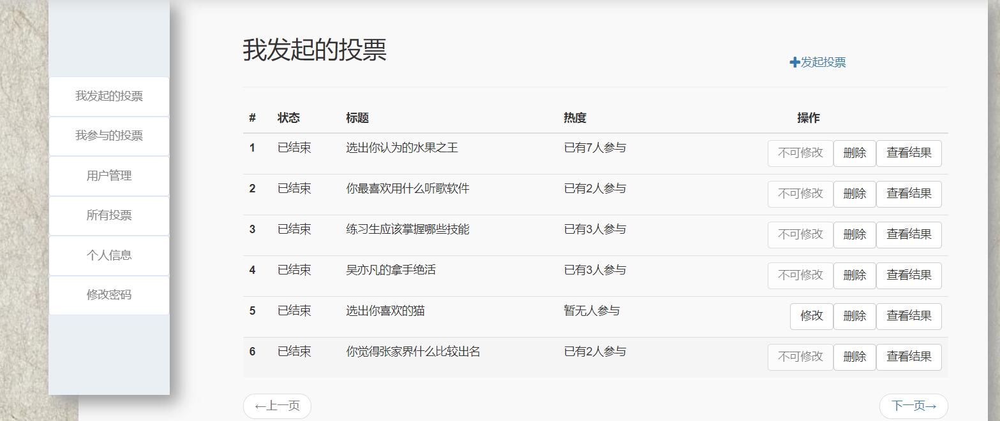
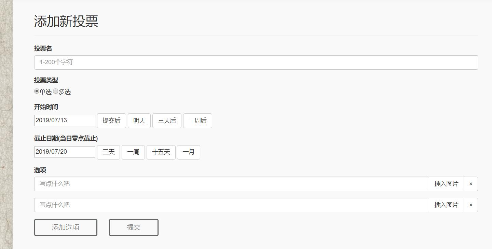

在线投票
在线投票系统，用户注册成为网站会员之后在系统中发起投票和进行投票，其次可以根据用户自己输入的信息分析用户行为和占比。主要用于人物评选，市场用户喜好分析。
项目功能概述
投票包含投票标题，类型（单选或多选），开始时间和结束时间，已经投票选项。普通用户可以在系统查看别人发起的投票进行投票，也可以维护自己发起投票，比如修改和删除，完成投票或者投票结束之后就可以查看投票结果。管理员可以管理所有用户，升级权限或者禁用账号，对所有投票进行查看和删除。
技术选型
基于JavaWeb,采用Mysql存储数据，使用nginx作为图片服务器进行图片代理。html/js/css/jquery，bootstrap 等前端技术。
前后端接口交互设计
混用jquery 和 jstl/el表达式进行页面渲染，因此在servlet里面有两种返回方式，一种是页面跳转，一种是内容输出。内容输出对应的ajax请求，请求转发采用jstl与el表达式渲染。前期确定好交互的接口，和servlet是有必要的，可以有效进行拦截权限控制。
数据库方面
优化到第三范式，单表信息存储对象内容，也就是将java的面向对象转成关系型表示。采用主外键连接彼此的依赖关系。
项目展示





更多也面就不截图了。
心得总结
通过这次实训，又积累了一个项目经验，了解了一个业务的流程。这次项目还是不够完善，存在架构和耦合方面的问题，感觉代码并不易于理解，发现自己的缺点也是自己以后前进的方向。这次项目的遗憾有以下几点。首先前期需求不够完善，仅仅是局部的内容。因此设计上受到了局限性，给后期业务带来些许麻烦。其次主要的弱点和不足均表现在前端，前后端交互原本是数据的交换，后端提供一个数据接口，将前端提供的数据加工之后再返回的过程。数据的交互不要求页面，也不顾及用户体验。但是前端是用户和系统的桥梁，如果这座桥梁不够美观和牢固，自然也没有用户会使用这个系统。虽然主要是走后端，但是对前端知识的匮乏也可能会成为后期发展的桎梏。